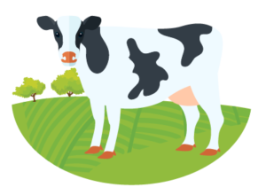
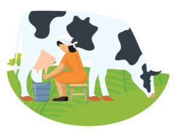
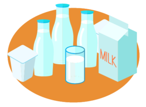
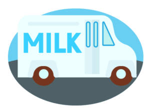
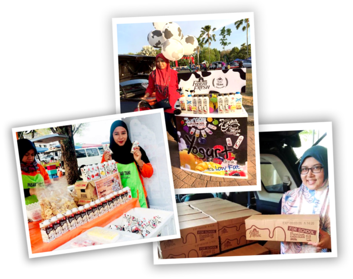

Farm Fresh began with one man’s dream to produce fresh and pure dairy in our very own backyard, just as nature intended.
While our presence has since grown, with farms in Malaysia and Australia, our secret to success remains the same: working with our natural environment to produce the creamiest, healthiest and freshest dairy possible.
THE FARM FRESH DIFFERENCE
Farm Fresh dairy comes from cows or ‘our ladies’, as we affectionately call them, who roam freely across our farms - with plenty of time outside, access to the greenest pastures, and a lot of sunshine.
Our dedicated team ensures that the ‘ladies’ stay happy and healthy within their natural and environmentally-preserved surroundings, helping them make dairy that’s simply full of natural goodness.

1) Cows in our fields

2) Milking
3) Processing

4) Transportation

5) Arrives at retail venue
EXPERIENCE THE FARM LIFE
We love what we do, and we want to share that love with Malaysians and the world too.
Visit our farm to reconnect with nature and understand how the best dairy is made,
the Farm Fresh way.
EMPOWERING MALAYSIAN MICRO-ENTREPRENEURS
All over the country, over 800 home dealers, many of whom are housewives, are delivering Farm Fresh goodness straight to the doorsteps of homes and businesses. Find a home dealer near you and support Malaysian micro-entrepreneurs!

WHAT WE BELIEVE
“It’s all about quality produce, ensuring we have healthy and happy cows,
preserving the environment and giving our customers what they truly deserve.”
“We believe in a simple approach to dairy farming and that when we do these things well,
people can taste the difference.”